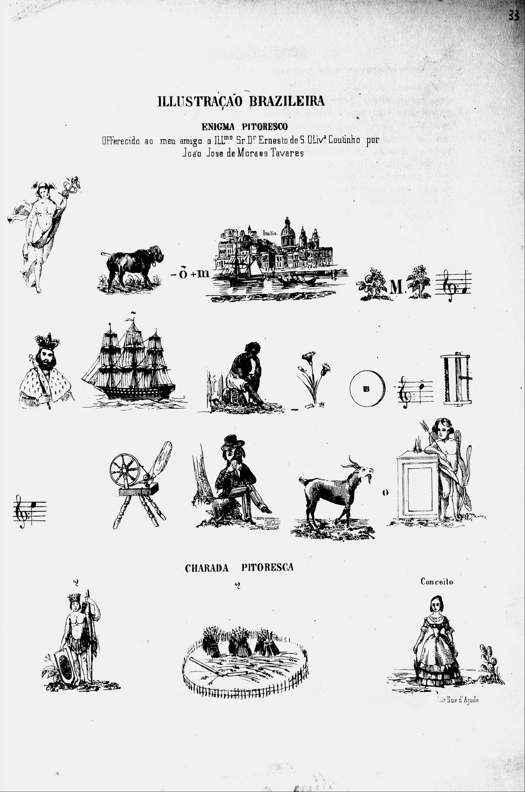
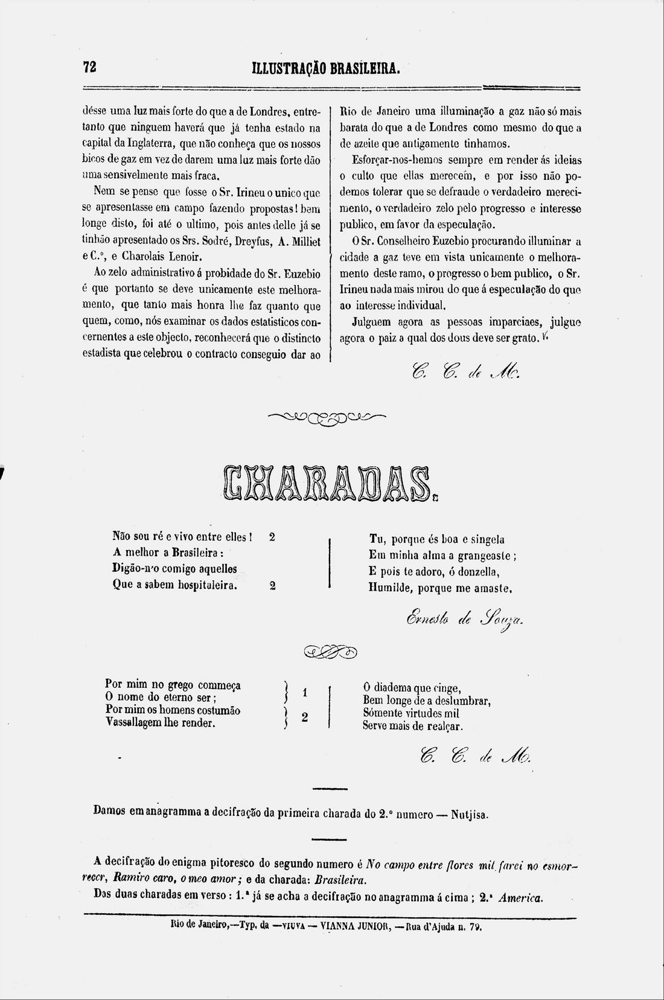

Let's analyze the game
Enigma Pitoresco
Switch between the enigma, the full page and the answer page, then click a numbered area to zoom in and read about it.



Let's analyze the game
Switch between the enigma, the full page and the answer page, then click a numbered area to zoom in and read about it.

